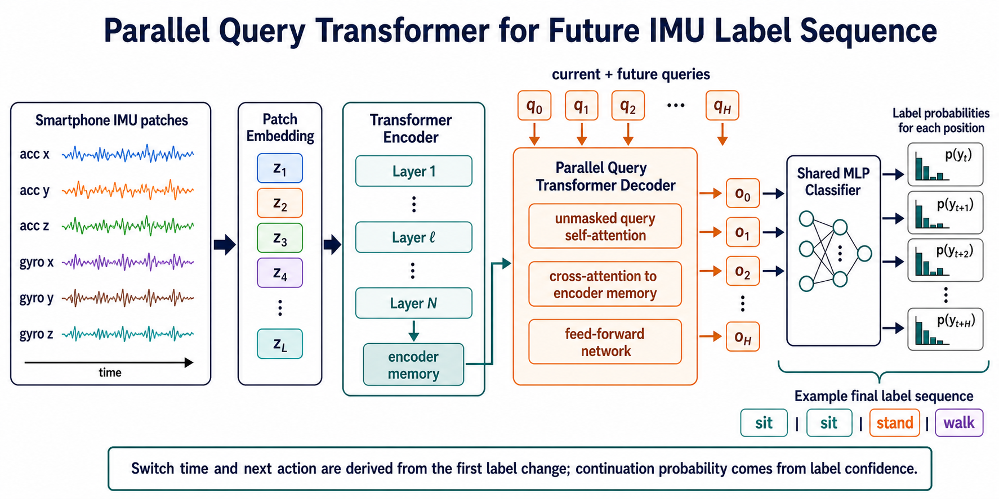
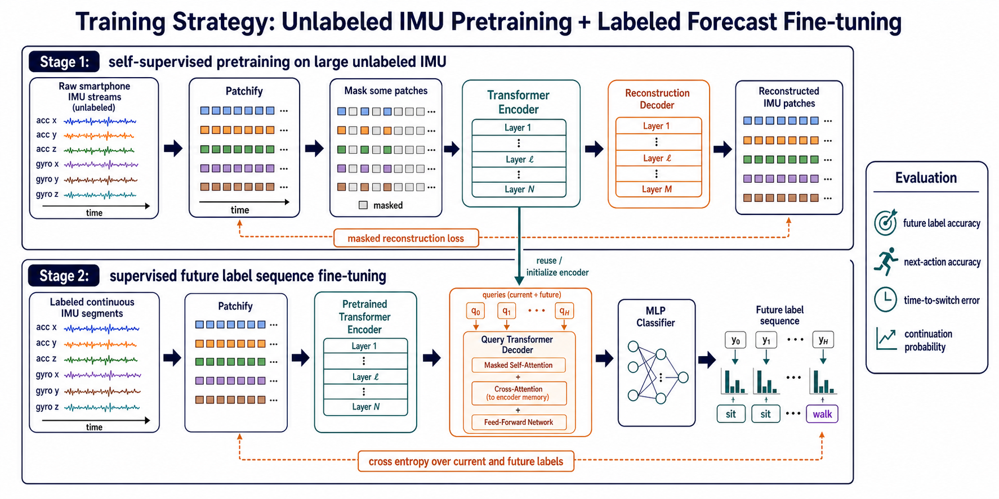
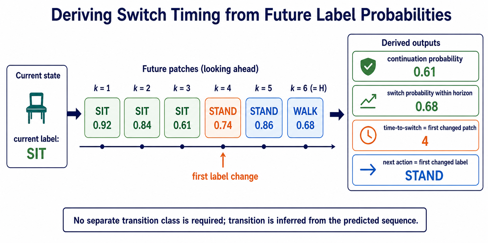

1. 问题重述
输入手机 IMU：acc x/y/z + gyro x/y/z 连续序列。
输出当前动作、未来动作序列、延续概率、切换时机、下一动作。
关键转变从单窗口 HAR 分类，转向连续流上的 label sequence forecasting。
2. 为什么不主用 transition class
- `<sit-2-stand>` 有直觉价值，但作为主标签会带来类别膨胀和样本稀疏。
- 较新的相近任务更常预测未来标签序列或未来动作段，而非枚举所有 A-to-B 切换。
- 未来序列中第一次 label 变化即可给出切换时机；变化后的 label 即下一动作。
保留空间transition type 可作为后续辅助头或分析标签，不作为第一版主任务。
3. 相关范式依据
P2LHAP
sensor patches -> patch-level activity label sequence；forecast 直接输出未来活动标签。
FUTR
learnable action queries 并行预测未来动作与 duration，避免自回归错误累积。
ActFusion
把未来不可见部分视作 mask tokens，通过补全动作序列完成 anticipation。
本方法
采用 parallel query decoder 作为主方案，自回归 decoder 仅作为后续消融。
4. 模型结构：Transformer Encoder + Parallel Query Decoder
主方法图
历史 IMU patch tokens 进入 Transformer Encoder；`q_0...q_H` 表示当前与未来 horizon queries；decoder 并行输出 `o_0...o_H`，共享 MLP classifier 对每个输出 token 分类。
5. 训练策略：无标签预训练 + 有标签微调
数据管线
6. 如何推导切换输出
无需 transition 主类
7. 损失函数与样本构造
样本从连续流中取过去 L 个 patch 作为输入，未来 H 个 patch label 作为 target。
监督目标当前标签 + 未来标签序列交叉熵，可对远期 horizon 降权。
8. 后续实验计划
方向一扩展从 single human label sequence 升级到 `human_action_sequence + phone_motion_sequence`，面向人体动作与手机/相机运动联合预测。